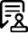

业务咨询问答
-
技术合同认定登记
-
技术贸易资格证业务
-
服务机构入驻管理
-
创客创业服务
-
项目申报咨询管理
-
技术转移业务
-
科技创新券服务管理
-
1 什么是技术合同
携带技术合同（原件和复印件各一份）；技术贸易资格证（副本）；营业执照（副本和复印件）；税务登记证（副本和复印件）；组织机构代码证（副本和复印件）；法人代表的身份证复印件到兰州科技大市场服务大厅技术合同认定登记服务区办理。 携带技术合同（原件和复印件各一份）；技术贸易资格证（副本）；营业执照（副本和复印件）；税务登记证（副本和复印件）；组织机构代码证（副本和复印件）；法人代表的身份证复印件到兰州科技大市场服务大厅技术合同认定登记服务区办理。 携带技术合同（原件和复印件各一份）；技术贸易资格证（副本）；营业执照（副本和复印件）；税务登记证（副本和复印件）；组织机构代码证（副本和复印件）；法人代表的身份证复印件到兰州科技大市场服务大厅技术合同认定登记服务区办理。携带技术合同（原件和复印件各一份）；技术贸易资格证（副本）；营业执照（副本和复印件）；税务登记证（副本和复印件）；组织机构代码证（副本和复印件）；法人代表的身份证复印件到兰州科技大市场服务大厅技术合同认定登记服务区办理。 携带技术合同（原件和复印件各一份）；技术贸易资格证（副本）；营业执照（副本和复印件）；税务登记证（副本和复印件）；组织机构代码证（副本和复印件）；法人代表的身份证复印件到兰州科技大市场服务大厅技术合同认定登记服务区办理。 -
2 技术合同认定登记可以享受哪些优惠政策?
携带技术合同（原件和复印件各一份）；技术贸易资格证（副本）；营业执照（副本和复印件）；税务登记证（副本和复印件）；组织机构代码证（副本和复印件）；法人代表的身份证复印件到兰州科技大市场服务大厅技术合同认定登记服务区办理。 携带技术合同（原件和复印件各一份）；技术贸易资格证（副本）；营业执照（副本和复印件）；税务登记证（副本和复印件）；组织机构代码证（副本和复印件）；法人代表的身份证复印件到兰州科技大市场服务大厅技术合同认定登记服务区办理。 携带技术合同（原件和复印件各一份）；技术贸易资格证（副本）；营业执照（副本和复印件）；税务登记证（副本和复印件）；组织机构代码证（副本和复印件）；法人代表的身份证复印件到兰州科技大市场服务大厅技术合同认定登记服务区办理。携带技术合同（原件和复印件各一份）；技术贸易资格证（副本）；营业执照（副本和复印件）；税务登记证（副本和复印件）；组织机构代码证（副本和复印件）；法人代表的身份证复印件到兰州科技大市场服务大厅技术合同认定登记服务区办理。 携带技术合同（原件和复印件各一份）；技术贸易资格证（副本）；营业执照（副本和复印件）；税务登记证（副本和复印件）；组织机构代码证（副本和复印件）；法人代表的身份证复印件到兰州科技大市场服务大厅技术合同认定登记服务区办理。 -
3 怎么办理技术合同登记?
携带技术合同（原件和复印件各一份）；技术贸易资格证（副本）；营业执照（副本和复印件）；税务登记证（副本和复印件）；组织机构代码证（副本和复印件）；法人代表的身份证复印件到兰州科技大市场服务大厅技术合同认定登记服务区办理。 携带技术合同（原件和复印件各一份）；技术贸易资格证（副本）；营业执照（副本和复印件）；税务登记证（副本和复印件）；组织机构代码证（副本和复印件）；法人代表的身份证复印件到兰州科技大市场服务大厅技术合同认定登记服务区办理。 携带技术合同（原件和复印件各一份）；技术贸易资格证（副本）；营业执照（副本和复印件）；税务登记证（副本和复印件）；组织机构代码证（副本和复印件）；法人代表的身份证复印件到兰州科技大市场服务大厅技术合同认定登记服务区办理。携带技术合同（原件和复印件各一份）；技术贸易资格证（副本）；营业执照（副本和复印件）；税务登记证（副本和复印件）；组织机构代码证（副本和复印件）；法人代表的身份证复印件到兰州科技大市场服务大厅技术合同认定登记服务区办理。 携带技术合同（原件和复印件各一份）；技术贸易资格证（副本）；营业执照（副本和复印件）；税务登记证（副本和复印件）；组织机构代码证（副本和复印件）；法人代表的身份证复印件到兰州科技大市场服务大厅技术合同认定登记服务区办理。